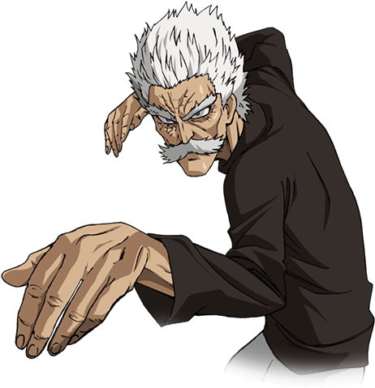

Fang, também conhecido como Silver Fang (Presa Prateada), é um herói Classe S (Rank 3) e um mestre lendário de artes marciais em One Punch Man. Idoso, porém extremamente forte, ele é o criador e mestre do estilo "Punho da Água Corrente Pedra Esmagadora", sendo o mentor original do vilão Garou.

Para saber mais sobre Bang, visite o site da Fandom